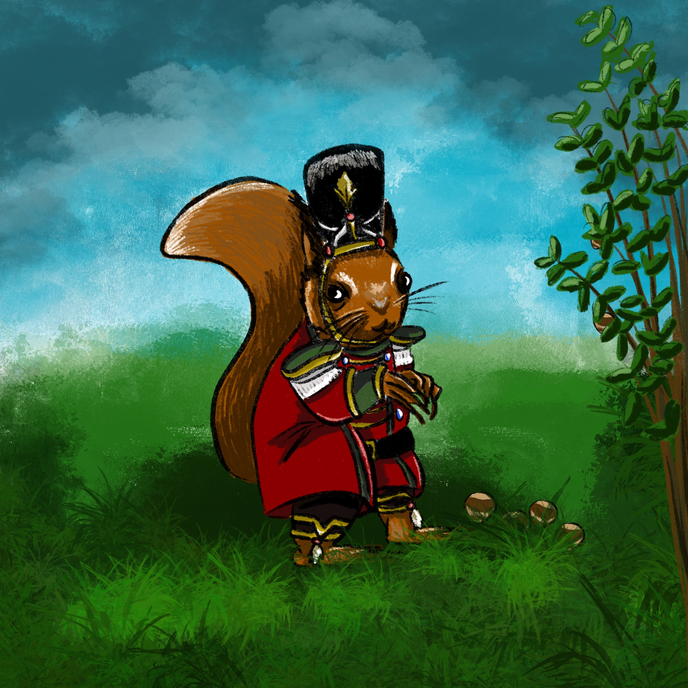
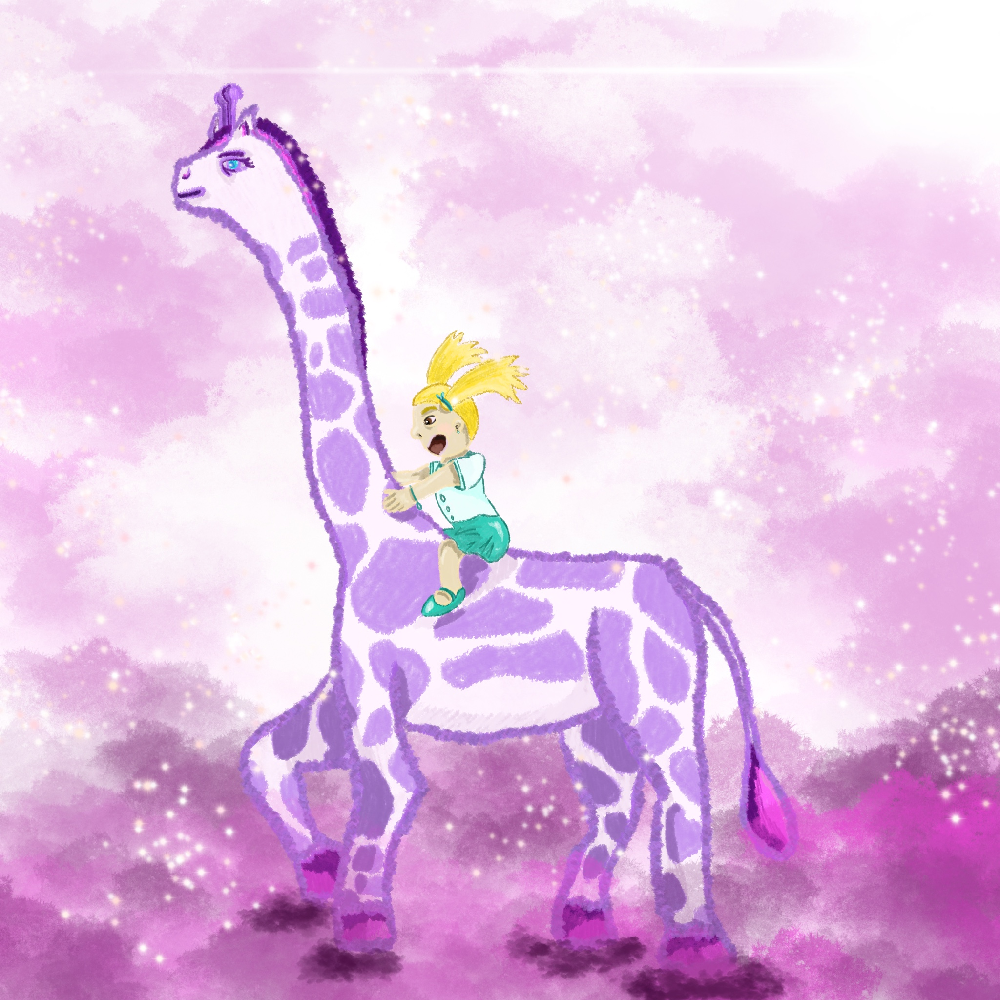
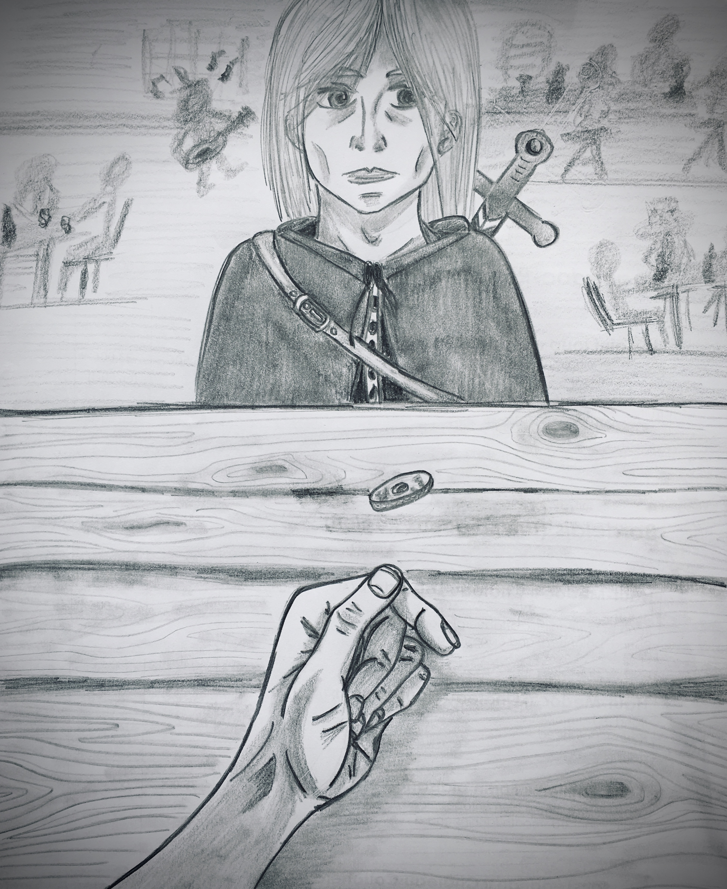
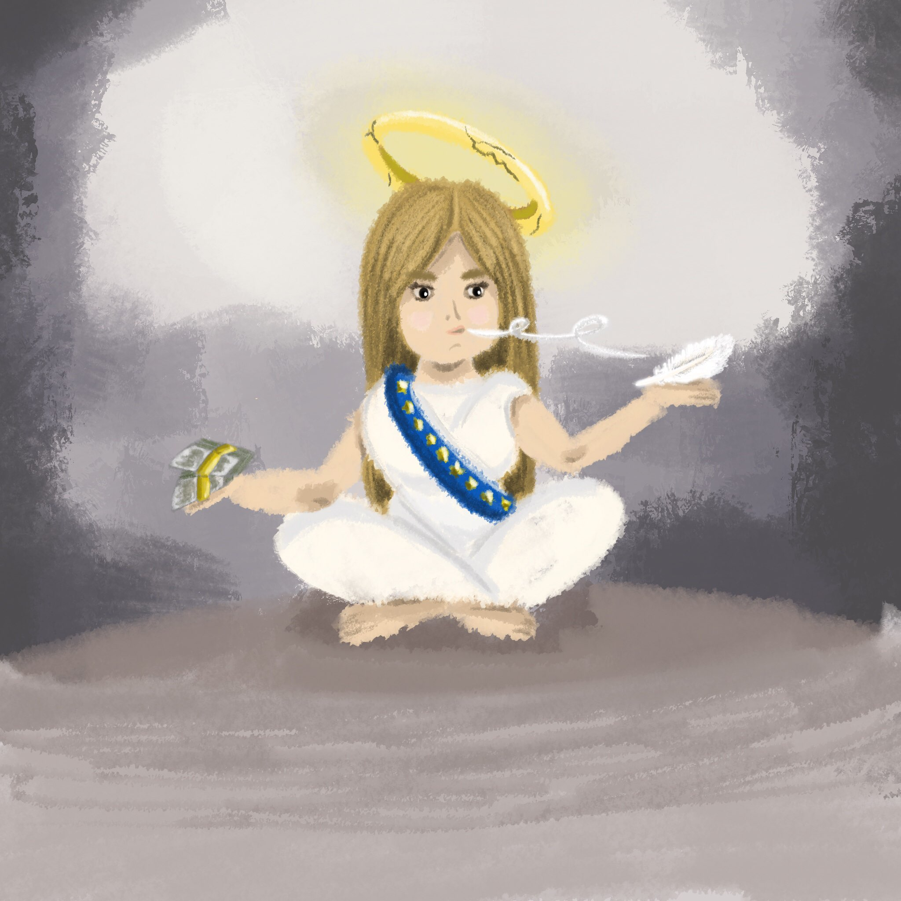

Inktober 2020
Retour de l’Inktober avec quelques créations sans prétention.

J1 – Fish / Poisson
D’abord crayonné et repassé aux stylos de couleurs, j’ai finalement reproduit mon esquisse sur tablette en utilisant un crayon plutôt diffus qui donne un effet « aquarelle » que je trouve approprié pour ces poissons de style japonais.

J2 – Wisp / Feu follet

Mon idée était de faire sentir une atmosphère pesante et effrayante avec cette forêt lugubre et ces lumières incertaines qui tentent de nous enfoncer plus loin. L’effet est plutôt opposé. On croirait avoir affaire à une forêt enchantée et les feux follets paraissent sympathiques.
J3 – Bulky / Massif
Un éléphant qui essaye de se faire tout petit parce qu’il sent qu’il n’est pas à sa place. Il a déjà écrasé un carton et d’autres menacent de tomber. Il ne doit plus bouger le pauvre petit.

J4 – Radio / … voilà quoi

Première impression, première pensée, le groupe Queen qui interprète leur fameuse chanson Radio Ga Ga en concert. Bien reconnaissable, car tiré de l’un de ses photos, j’ai donc esquissé un portrait de Freddie Mercury lors du Live Aid de 1985.
J5 – Blade / Lame
La lame m’a fait penser au katana, qui m’a fait penser au Japon, qui a amené les sushis à mon esprit. Le fait que la lame soit affutée donne des traits linéaires et fins. C’est Diatomée qui m’a donné l’idée de traiter la scène de cette façon.

J6 – Rodent / Rongeur

Pour ce qui est de dessiner des rongeurs, il y avait le choix. L’idée du Casse-noisette, ce personnage à l’allure un peu militaire qui prête parfois sa frimousse à l’ustensile servant à casser les fruits à coque, me semblait intéressante aussi. Qui de mieux qu’un écureuil pour casser des noisettes ?
J7 – Fancy / Fantaisie, imaginaire
J’aime ce genre de thème qui permet de laisser parler son imagination. J’avais vraiment l’intention de représenter une girafe doudouille, type énorme peluche, mais il se trouve qu’elle a l’air d’un diplodocus. Qu’à cela ne tienne, je l’aime encore plus comme ça ! Et la gamine qui s’amuse avec aussi.

J8 – Teeth / Dents

Sans commentaire. Tout est dans le crayonné 😁. Il faut juste reconnaître la Bouche de Sauron et penser à la réaction légendaire de ce cher Aragorn qui ne croit pas à ses dires et n’y croira jamais !
J9 – Throw / Jeter
♪ « Jette un sou au Sorceleur, lalalalalalla lalalalalalla » ♫
Un bougre lance une pièce au Sorceleur pour qu’il le débarrasse d’un monstre. Tout ce qu’il y a de plus normal.

J10 – Hope / Espoir

Cette personne est montée sur la colline pour mieux voir les étoiles, dans l’espoir qu’une étoile filante surgisse et lui permette de formuler un vœu.
Il y a un petit problème de plan avec la lanterne.
J11 – Disgusting / Dégoûtant
Cette allégorie de la Justice est plutôt banale : la balance.
Ici, elle est déséquilibrée à cause du poids de la corruption, représentée par des liasses de Dollars. La Justice elle-même est vendue. Son auréole – son impartialité – se brise sitôt qu’elle souffle sur la plume pour libérer son deuxième plateau. Si celui-ci accueille aussi de l’argent, elle sera de nouveau en équilibre et la Justice redeviendra intègre… À sa façon.
Petit clin d’œil aux couleurs de l’UE.

J’ai procédé différemment de d’habitude pour ce dessin. Plutôt que d’esquisser les contours et de colorier ensuite, j’ai utilisé un pinceau large (sur tablette) pour esquisser directement les formes, que j’ai reprécisées au fur et à mesure. Le résultat me plaît bien.